Next: 2-DOF Pole Placement Controller Up: 2-DOF Controller theory and Previous: 2-DOF Controller theory and
We want the desired output, 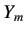, of the system to be related to the setpoint 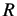 in the following manner:
| 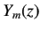 | 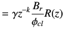 | (6.14) |
|
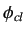 is the desired closed loop characteristic polynomial obtained from the desired region analysis. Please refer to [1] for more information on desired region analysis. is chosen such that equals the setpoint at steady-state. Therefore is given by,
| ||
| 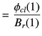 | (6.15) | |
|
Simplifying the block diagram shown in figure 6.3 yields
| ||
| 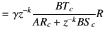 | (6.16) | |
|
We have dropped the argument of for convenience. We want the output 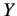 of the system to be equal to the desired output . Equating equations 6.14 and 6.16 we get
| ||
| 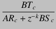 | 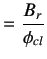 | (6.17) |
|
We can expect some cancelations between the numerator and the denominator polynomials in the LHS, thereby making 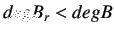. But the cancelations, if any, must be between 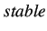 poles and zeros. One should avoid the cancelation of an unstable pole with an unstable zero. Let us split the factors of the numerator and denominator polynomials, 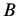 and
| ||
| 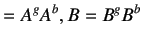 | (6.18) | |
| 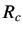 | 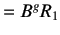 | (6.19) |
| 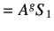 | (6.20) | |
| 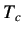 | 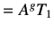 | (6.21) |
Hence, equation 6.17 becomes
| 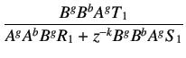 | (6.22) | |
|
After cancelling out the common factors, we obtain
| ||
| 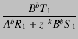 | (6.23) | |
|
We obtain,
| ||
| 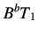 | 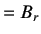 | (6.24) |
| 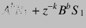 | 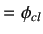 | (6.25) |
|
Equation 6.26 is known as the Aryabhatta's identity and can be used to solve for 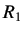 and 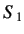. One can choose 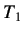 in many ways. If we choose 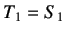 the 2-DOF controller is reduced to a 1-DOF controller. Let us choose 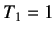. Therefore equation 6.25 becomes
| ||
| 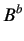 | (6.26) | |
|
The expression for now becomes
| ||
| 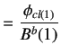 | (6.27) | |
|
and the desired closed loop transfer function will be
| ||
 |
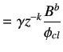 | (6.28) |